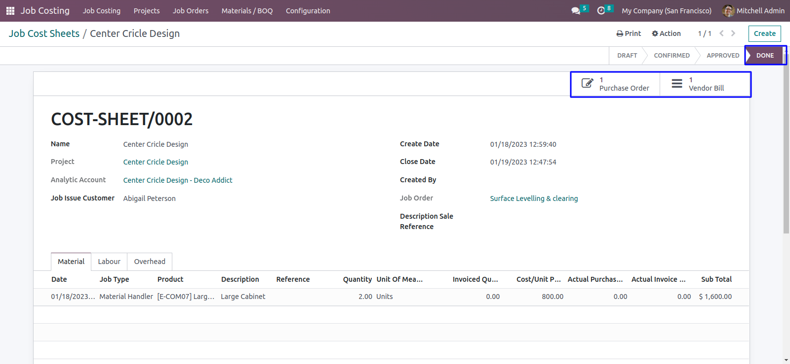
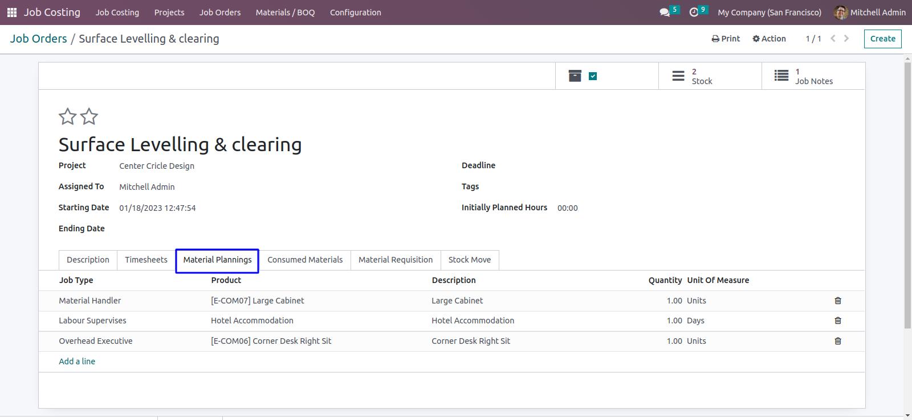
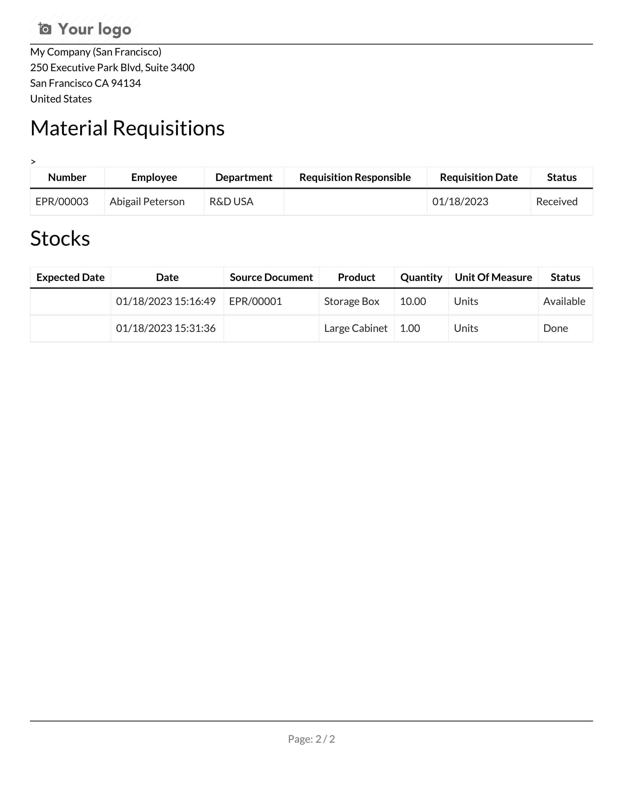

Purchase Requisition Report

Project Construction Job Costing and Job Cost Sheet Odoo app used to manage project job cost and job cost sheet with material request in construction management system in Odoo This Odoo module also help to calculate progress costing and cost calculation in each Construction project job cost with job order with Material Product Purchase Requisitions it use for product purchase requisition process by employee and users. Once purchase requisition placed for required goods and material, by default it will be place from the configured location for users and employee. Project Job cost sheet calculates complete cost of the each project including material, labour and overhead cost for material it's also generate stock movement when material is consume for the process. User can able to print different reports for this job costing apps.
Access Rights Configuration
User have to set "Purchase Requisition Department Manager" and "Purchase Requisition User".
Job Type Configuration
Under Job Costing > Configuration menu user can create and configure job types.
Create Job Cost Sheets
User can create job cost sheet goto Job Costing > Job Costing > Job Cost Sheets.
User can add Material, Labour and Overhead details in job cost sheet.
User can also see total material cost,total labour cost,total overhead cost and total cost for job cost sheet.
Click on "Approve" button to approve job cost sheet.
User can see on approved job cost sheet related purchase order and vendor bill will appear.
Purchase Order
Vendor Bill
Job Cost Sheet Report
User can print job cost sheet report form here.
Create Project
User can create project for job costing.
User can access all created documents related to project from smart button.
Job Order
Job Cost Sheet
Project Notes
Project Notes
Under Job Costing > Project > Project Notes menu user can create notes for project.
Materials/ BOQ Management
Here user can set BOQ type for particular product/material.
Materials Requisitions Configuration
User have to configure "Source Location" and "Destination Location" location on "Employee" and "Department" view.
Create Materials Requisitions
Under Job Costing > Material / BOQ > Material Requisition / BOQ menu employee can create material requisitions, Click on "Confirm" button to confirm requisitions.
Approve From Department Manager
Only purchase requisition department manager can approve material requisition which was confirmed by employee.
Approve From Requisitions User/Head
User can see requisition on "Waiting IR Approved" state, Only user with requisition user/head can approve purchase requisition by clicking "Approve" button.
Create Purchase Order/Internal Picking
Here purchase requisition head can create purchase order or internal picking based on requisition action.
Purchase requisition head can also set vendors for create purchase order or internal picking.
After purchase order or internal picking created, Stage will be changed from Approved to Purchase Order Created.
Material Requisition Received
Employee can receive material requisition by clicking on "Received" button. After receive requisition stage will be changed from "Purchase Order Created" to "Received".
View Purchase Order and Internal Picking
In requisition form view, Click on smart button to view created purchase order and internal picking based on requisition action.
Purchase Requisition Report
Create Job Order
Under Job Costing > Job Order > Job Order menu user can create job order.

Job Order Timesheet
User can add timesheet for job order.
Job Order Material Planning
User can add job order material planning.
Job Order Consumed Materials
User can add consumed materials for job order.
Job Order Materials Requisitions
User can add materials requisitions for job order.
Job Order Stock Move
Job Order Report
User can print job order report.
Create Job Notes
User can create note for job order.
Project Issue
User can create project issue from Job Costing > Job Order > Project Issue menu, Also can enter details about project issue name, customer information and other related details about project issue.
Project Issue Timesheet
Here you can add project issue timesheet.
Create Task
Manager can create task from current project issue.
When user click on "Create Task" button then new wizard will be open, In wizard user can set required information for project task.
View Created Task
After creating task from issue, You can see Task smart button in project issue form.
Click on "Task" button to view created task.

Create Subtask
User can create subtask of task.
When clicking on create subtask, New wizard will open here user have to enter detail to create subtask.
View Project Subtask
View Issue in Customer
User can also see created issues in customer view by clicking issue button.
Most Demanded Apps


At BrowseInfo we offer end to end solution for Odoo services. Which includes analysis & consultation on the workflows and integration part. Please note that You're not allowed to distribute this module after purchase! Incase of any question regarding this module feel free to email us on ticket@browseinfo.in or raise a ticket on support.